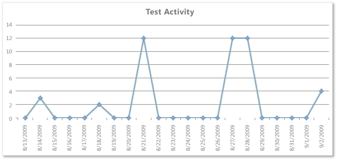
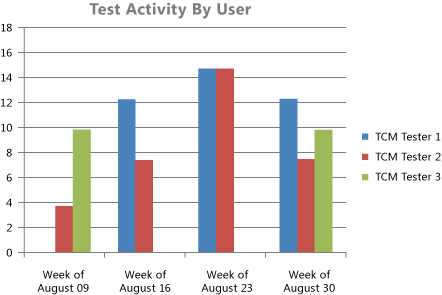
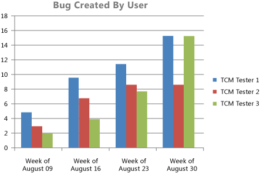
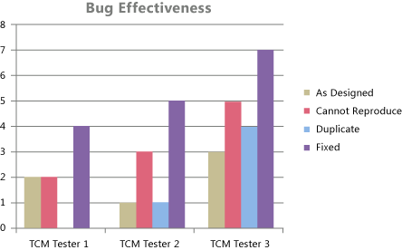

Teams who are responsible for testing software can use the Test Team Productivity report to help track the overall activity of the team and individual team members in testing the product and finding and reporting bugs. The Test Team Productivity report provides four reports that show test and bug activity:
-
Test Activity: Helps the team monitor the volume of tests it has run over the past four weeks.
-
Test Activity Per User: Helps the team track the volume of tests that individual team members have run over the past eight weeks. The team can use this to help load balance the test activity across team members.
-
Bugs Created By User: Helps the team track how many bugs each team member creates.
-
Bug Effectiveness: Supports the team in determining how effective it is in defining bugs that are useful and that help build a quality product.
 Note
Note
You can view the Test Team Productivity report from the Test Team Management folder that is located under the Excel Reports folder for the team project in Team Explorer. You can access this folder only if your team project portal has been enabled and is provisioned to use SharePoint Products. For more information, see Access a Team Project Portal and Process Guidance.
|
In this topic |
Related topics |
Required Permissions
To view the report, you must be assigned or belong to a group that has been assigned the Read permissions in SharePoint Products for the team project.
To modify or customize the report, you must be a member of the TfsWarehouseDataReaders security role in SQL Server Analysis Services. You must also be assigned or belong to a group that has been assigned the Members permissions in SharePoint Products for the team project. For more information, see Grant Access to the Databases of the Data Warehouse for Visual Studio ALM and Managing Permissions.
 Data
in the Reports
Data
in the Reports
The test activity reports are available only when the team creates test plans and starts to run tests by using Microsoft Test Manager. For information about how to define test suites and test plans, see Organizing Test Cases Using Test Suites.
The bug activity reports are available only when the team creates bugs and starts to resolve bugs.
These reports are based on PivotTable reports that show activity that is recorded for a specific team project and data that is stored in the data warehouse.
Test Activity and Test Activity by User Reports
The Test Activity report provides a line graph that shows the number of individual tests that were run each day. If a particular test case was run three times in one day, it is counted three times for that day.
The Test Activity per User report provides a bar chart that indicates how many tests each test team member ran each week.
The following table describes the report filters and fields that are used in the PivotTables that generate the test activity reports.
|
Filters |
Fields |
||
|---|---|---|---|
Filter specific to the Test Activity report:
Filter specific to the Test Activity by User report:
|
Field specific to the Test Activity by User report:
|
Bugs Created by User and Bug Effectiveness Reports
The Bugs Created by User report provides a bar chart that indicates how many bugs each test team member created each week.
The Bug Effectiveness report provides a bar chart that indicates the count of resolved bugs that were created by each test team member, grouped by their bug resolution.
The following table describes the report filters and fields that are used in the PivotTables that generate the bug activity reports.
|
Filters |
Fields |
|---|---|
Filter specific to the Bugs Created by User report:
Filters specific to the Bug Effectiveness report:
|
Fields specific to Bugs Created by User report:
Fields specific to Bug Effectiveness report:
|
Required
Activities for Tracking Test and Bug Activity
For the test activity reports to be useful and accurate, the team must perform the following activities:
-
Define test cases and test plans, and assign test cases to the test plans. For more information, see Defining Your Testing Effort Using Test Plans.
-
Run tests. For more information, see Running Tests.
-
(Optional) To filter the reports by product area and iteration, specify the Area and Iteration paths of each test case.
Note
The project administrator for each team project defines area and iteration paths for that project so that the team can track progress by those designations. For more information, see Create and Modify Areas and Iterations.
For the bug activity reports to be useful and accurate, the team must perform the following activities:
-
Create a bug for each code defect that was found by testing.
-
Update the State of each bug as the team fixes, verifies, closes, or reactivates it and accurately set the Reason field every time that the bug changes state.
-
(Optional) To filter the reports by product area and iteration, specify the Area and Iteration paths of each bug.
Updating
and Customizing the Reports
You can update the Test Team Productivity report by opening it in Office Excel and changing the filter options for the PivotTable report for one of the worksheets. You can customize each report to support other views, as the following table describes.
|
View |
Action |
|---|---|
|
Test or bug activity for a product area |
Change the filter for Area(default=All) |
|
Test or bug activity for an iteration |
Change the filter for Iteration(default=All) |
|
Test activity for a specific test plan or set of test plans |
Change the filter for Test Plan(default=All) |
|
Test or bug activity for the most recent six, eight, or more weeks |
In the Columns PivotTable Field List, replace @@Last 4 weeks@@or @@Last 8 weeks@@with a different Set |
|
Bug effectiveness for a particular time period |
Change the filter for Year Month Date(default=All) |
For more information about how to work with and customize PivotTables and PivotChart reports, see the following pages on the Microsoft Web site: